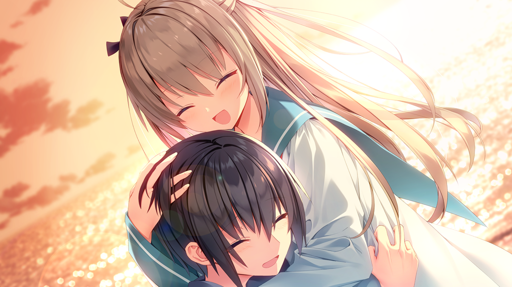

海平面因不明原因急速上升，海洋吞没了大部分沿海地区，如今也在不断蚕食着陆地。 人类的栖息地被迫收缩，处于巅峰时期的科学技术不断流失。 这是逐渐迈向灭亡的平静时代。
在不远的未来，海平面原因不明地急速上升，导致了地表多数都沉入海中。 小时候因为事故而失去一条腿的少年：斑鸠夏生 ， 厌倦了都市的生活，移居到了海边的乡村小镇。 曾经身为海洋地质学家的祖母留给他的， 就只有船、潜水艇还有债务。 夏生为了取回“失去的未来”，与迷之讨债人凯瑟琳一起， 潜海前往据说保存着祖母遗产的海底仓库。 在那里， 他遇到了一位沉睡在如同棺材一般装置中不可思议的少女――亚托莉。 她是一位构造精密到与人类别无二致，而又有着丰富感情的机器人。 「我想完成主人留给我的最后的命令。 在此之前，我会成为夏生先生的腿！」 从海底被打捞起来的亚托莉如是说到。 在一个逐渐沉入海中的平和小镇， 少年和机器人少女的难忘夏日就这么开始了——